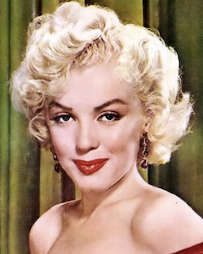

Marilyn Monroe (/ˈmærəlɪn mənˈroʊ/; born Norma Jeane Mortenson; June 1, 1926 – August 4, 1962) was an American actress, model, and singer. Known for playing comic "blonde bombshell" characters, she became one of the most popular sex symbols of the 1950s and early 1960s, as well as an emblem of the era's sexual revolution. She was a top-billed actress for a decade, and her films grossed $200 million (equivalent to $2 billion in 2022) by the time of her death in 1962.[3] Long after her death, Monroe remains a pop culture icon.[4] In 1999, the American Film Institute ranked her as the sixth-greatest female screen legend from the Golden Age of Hollywood.
Born and raised in Los Angeles, Monroe spent most of her childhood in a total of 12 foster homes and an orphanage[5] before marrying James Dougherty at age sixteen. She was working in a factory during World War II when she met a photographer from the First Motion Picture Unit and began a successful pin-up modeling career, which led to short-lived film contracts with 20th Century Fox and Columbia Pictures. After a series of minor film roles, she signed a new contract with Fox in late 1950. Over the next two years, she became a popular actress with roles in several comedies, including As Young as You Feel and Monkey Business, and in the dramas Clash by Night and Don't Bother to Knock. Monroe faced a scandal when it was revealed that she had posed for nude photographs prior to becoming a star, but the story did not damage her career and instead resulted in increased interest in her films.